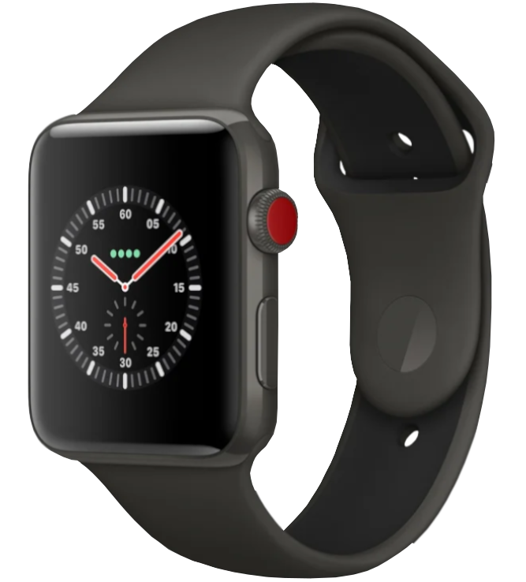

Computer
Handys

Konsolen
Tablets

Laptops

Monitore

Hardware aller Art

Fernseher

Digitaluhren

Server
Ihr PC macht seltsame Geräusche? Sie sehen vor lauter Fehlermeldungen den Bluescreen nicht mehr? Der Computer
ist langsam geworden oder fährt nicht mehr hoch? Es kann viele Gründe dafür geben, dass Ihr Gerät nicht mehr so
läuft wie gewohnt. Oft ist die Hardware veraltet oder beschädigt, oder ein Softwarefehler verursacht Probleme.
Wir überprüfen welche Schäden an Ihrem Gerät vorliegen, sichern Ihre Daten, tauschen defekte Hardware aus und
bauen neue Komponenten wie z.B. Arbeitsspeicher, Grafikkarte oder Mainboard sachgemäß ein. Unsere kompetenten
Servicetechniker sorgen für fachgerechte Vor-Ort-Unterstützung - schnell und zuverlässig.